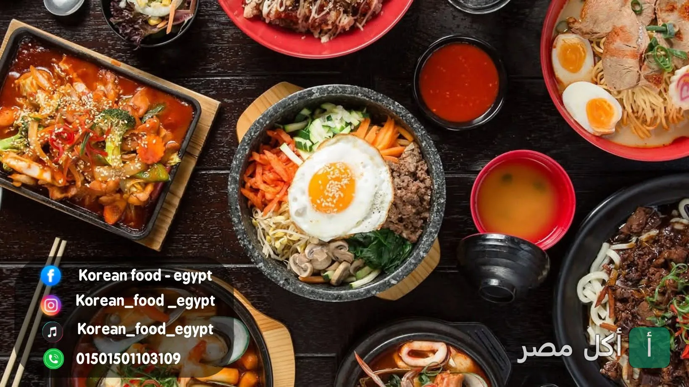

همبرجر الكيمباب الكوري
كيمباب كوري على شكل همبرجر - مقرمش مقلي من الخارج و طري من الداخل بصوص المايو تشيلي الحلو يمكنك طلب اكسترا صوص حار
300 جنيه
اختار طلبك من المنيو وكلمنا على 01501103109.

الأسعار بالجنيه المصري من صفحة أكل مصر (آخر تحديث معلن: ٢١ سبتمبر ٢٠٢٦). أكد السعر مع المطعم عند الطلب.
كيمباب كوري على شكل همبرجر - مقرمش مقلي من الخارج و طري من الداخل بصوص المايو تشيلي الحلو يمكنك طلب اكسترا صوص حار
300 جنيه
الأرز المطبوخ المتبل ملفوف بورق الكيم مع خضار مختلف وملون من الخضار و البيض و الكابوريا بشكل كيوت - جديد
345 جنيه
٤ قطع من الكيمباب البومب المشكله - عباره عن الارز المتبل المطبوخ ملفوف بورق الكيم الكوري بحشوات مختلفه من الخضار المشوح ، السوسيس المتبل ، دجاج حار كوري و سلطة الكابوريا المميزة مع صوص من اختيارك
290 جنيه
شرائح اللحم المتبلة بطريقة كورية لذيذة مع شرائح البصل و الجزر و السمسم يقدم مع أرز مسلوق على الطريقة الكورية - يرضي كافة الاذواق
355 جنيه
165 جنيه
190 جنيه
195 جنيه
طبق مميز من الأرز المسلوق المشوح مع الخضار وقطع الدجاج , بلمسه صينيه كورية مختلفة و البيض المقلي , يرضي كافة الأذواق حتى الصغار
195 جنيه
قطع السوسيس اللذيذ مع خلطتنا المميزة من الخضار المتنوع مع الصوص الحامض الحلو ( غير حار )
220 جنيه
طبق النودلز و قطع الدجاج الصغيرة المقلية مع الخضار المتنوع في الصوص الحامض و الحلو لمحبي المطبخ الصيني بلمستنا الكورية
255 جنيه
قطع الخيار الكبيرة المتغرقة بخلصة الكيمتشي النباتي المميز مع شرائح الجزر اللذيذ مناسب جدا كطبق جانبي بجانب كل الاطباق الكورية
155 جنيه
أو ما يطلق عليه التيوكبوكي الكوري ( طعام الشارع الكوري ) و هو كعك الارز مع الصوص الكوري الحار و الخضار مثل الجزر بوصفنا المميزه - يمكنك طلبه اكسترا حار أو حار أو أقل حرارة
260 جنيه
طبق التوكبوكي + نودلز ( من طعام الشارع الكوري )
280 جنيه
توكبوكي كوري ( كعك الارز الحار ) مع الصوص الكوري الحار و الخضار مثل الجزر مع نكهه الرز المميزة في الحليب والقشطة و تتبيلتنا المميزة - نوع جديد من التوكبوكي التقليدي الاقل حرارة من الأساسي
290 جنيه
أو ما يطلق عليه التيوكبوكي الكوري ( طعام الشارع الكوري ) و هو كعك الارز مع الصوص الكوري البارد من معجون الفاصولياء السوداء و الخضار مثل الكرنب و الجزر و البصل بوصفنا المميزه بزيت بالسمسم - النوع البارد من الدكبوكي
290 جنيه
رز مسلوق مع الكثير من الخضار المختلف الفريش الموسمي ,شرائح الدجاج المشوحة , بيض مقلي عيون مع خلطة الصوص الحار الكوري المميزة الخاصه بنا
315 جنيه
نودلز مع الدجاج و الخضار و الليمون وصفتنا الخاصة غير حاره تناسب كل الاذواق و بخاصه الصغار أيضا
255 جنيه
قطع الدجاج و الخضار المشوح في معجون الفاصولياء السوداء ( الحلال ) بتتبيلة مميزة مع النودلز وشرائح الخيار
295 جنيه
أرز مطبوخ متبل على الطريقة الكورية مع الخضار المشوح في صوص الجاجانغ الكوري اللذيذ و شرائح الخيار - طبق مشبع
285 جنيه
شرائح الدجاج المتبلة و المشوحه بصوص البولجوجي مع البصل يقدم مع الارز الأبيض المسلوق
325 جنيه
نودلز شفافه كورية مع الخضار الموسمي المشوح بتتبيلة مميزة و طعم غير تقليدي
265 جنيه
نودلز شفافه كورية مع شرائح الدجاج المتبلة الحلوة مع الخضار الموسمي المشوح بتتبيلة مميزة و طعم غير تقليدي
280 جنيه
قطع الدجاج المقلية مع الصوص الحامض والحلو و الخضار المشوح ( غير حار )
265 جنيه
قطع الدجاج المقلية مع صوص البرتقال و شرائح البرتقال الحلوة - طبق جديد ( ميكس كوري + صيني )
265 جنيه
قطع الدجاج المقلية مع صوص الجوتشوجانج الكوري و الثوم و السمسم المحمص ( حار حلو )
265 جنيه
لفائف البيض الكورية ( بيض مقلي ملفوف ) مع الخضار المتنوع
205 جنيه
قطع الخضار المقلية في تتبيلة مميزه مع السمسم يقدم مع الصويا صوص
200 جنيه
12 لفائف ورق الكيم الكوري المقلي ( سناكس ) بحشو من الجلاس نودلز المتبلة ( الجابتشي ) - يعد واحد من أشهر أكلات الشارع الكوري - يقدم مع الصويا صوص
245 جنيه
12 لفائف ورق الكيم الكوري المقلي ( سناكس ) بحشو من النودلز الحاره ( بولداك ) - يعد واحد من أشهر أكلات الشارع الكوري - يقدم مع الصويا صوص - حار
235 جنيه
2 مثلث من مثلثات الارز الكورية بالخضار و البيض مع السمسم وزيت السمسم
185 جنيه
2 مثلث من مثلثات الارز الكورية بالخضار و البيض و السوسيس مع السمسم وزيت السمسم
195 جنيه
2 مثلث من مثلثات الارز الكورية بالخضار و البيض و الكابوريا مع السمسم وزيت السمسم
200 جنيه
2 مثلث من مثلثات الارز الكورية مع التونه و المايونيز بتتبيله مميزة مع السمسم وزيت السمسم
250 جنيه
2 قطعة كورن دوج كوري بالسوسيس مغلف بتتبيلة مقرمشة و لذيذه - مع صوص الخردل مايونيز و الكاتشاب - أكثر ما تجدوه في أكل الشارع الكوري
250 جنيه
4 قطع من ورق الارز المحشي نودلز حار مع الجبن و توابلنا الكورية المميزة مع شرائح الكيم المقرمشة - تقدم مع صوصات مختلفة
235 جنيه
طبق الكاري اللذيذ المشهور في الدراما الكورية المعد من صدر الدجاج المقلي المقرمش والخضار المطبوخ مع توابل كورية مميزة - يقدم مع الارز
280 جنيه
عمركم سمعتو عن كيمباب بدون رز ؟ دا كيمباب بالخضار و الكابوريا بدون رز - ملفوف بورق الارز و الكيم الكوري يقدم مع صوص الترياكي المميز
295 جنيه
3 قطع فيش كيك على أسياخ، تُقدّم في حساء كوري أصيل خفيف ودافئ - إختيار مثالي لمحبي نكهات البحر وأكلات الشارع الكورية
275 جنيه
دبابيس الدجاج الحاره الحلوة بالسمسم بصوص كوري مميز و صوص الجوتشوجانغ الكوري الحار
315 جنيه
خضار مقلي كوري متنوع من البصل و الجزر و الخضار الموسمي بتتبيلة خفيفه مقلية يقدم مع الصويا صوص لمذاق اقوى
220 جنيه
أجنحة دجاج مقلية كريسبي على الطريقة الكورية، متغطية بصوص حار حلو "بصوص الجوتشوجانغ" الكوري الأصيل اختيار مثالي لعشاق الأكل الكوري والترندات الجديدة
325 جنيه
كرات الارز بالخضار و التونه مايو بتتبيله فريدة مغطاة بورق الكيم المحمص مشهور في الدراما الكورية صحية جدا وغير حارة - ٧ قطع
205 جنيه
أزر مع خضار متنوع بتوابلنا المميزة مغطى ببيض مقلي مع لمسة من زيت السمسم الكوري الغني ( غير حار )
195 جنيه
أرز مقلي بالجوتشوجانغ الحار الكوري بخلطتنا الخاصة مع بيضة ذهبية مقلية
195 جنيه
لفائف الارز مع الخضار المشوح و البيض المقلي المغلف بورق الكيم و زيت السمسم و السمسم المحمص
185 جنيه
لفائف الارز مع الخضار المشوح و السوسيس الحلو مع البيض المقلي المغلف بورق الكيم و زيت السمسم و السمسم المحمص
195 جنيه
لفائف الارز مع الخضار المشوح و أصابع الكابوريا مع البيض المقلي المغلف بورق الكيم و زيت السمسم و السمسم المحمص
205 جنيه
لفائف الارز مع الخضار المشوح مع الدجاج المقلي و البيض المغلف بورق الكيم و زيت السمسم و السمسم المحمص
255 جنيه
لفائف الارز و التونة مع المايونيز المغلف بورق الكيم و زيت السمسم و السمسم المحمص
265 جنيه
8 قطع من لفائف الارز الصغيره مع الخضار المشوح و البيض المقلي المغلفة بورق الكيم و زيت السمسم و السمسم المحمص
255 جنيه
10 قطع كيمباب الكابوريا مقلية بخلطة مميزة يقدم مع الصويا صوص
280 جنيه
طبق الارز الكوري المطبوخ مع التونه و المايونيز بتتبيله مميزة مع البيض المقلي و ورق السوشي المحمص بزيت السمسم اللذيذ الفريش
280 جنيه
نودلز مع صوص الجوتشوجانغ الكوري و توابل مميزة لعشاق الصوص الكوري الحلو و الحار
235 جنيه
نودلز على الطريقة الكورية و الصينية معا لمحبي النودلز بالصويا صوص و التوابل المميزة و الخضار المتنوع طبق لكل محبي النودلز بشكل عام - غير حار
230 جنيه
قطع الدجاج المشوحه مع الخضار و التوكبوكي الكوري مع الصوص الكوري الحار ( الجوتشوجانغ ) و التوابل المميزة
415 جنيه
مخلل كوري حار من الكرنب الصيني مع خلطة الصوص الكوري الحار المميزه بنا اساسها الفلفل الكوري الحار والخضار الفريش مثل الجزر مع صوص السمك والسمسم ** كيمتشي ( فريش ) مقرمش غير مخمر مده طويلة
255 جنيه
قطع الكيمتشي المشوحه مع صوص الجوتشوجانغ الكوري و الارز الأبيض ، يقدم مع بيضه عيون مقلية
275 جنيه
طبق اطفال مكون من طبق نودلز بالخضار المشوح مع زيت السمسم والصويا صوص وتوابلنا المميزة مع اضافه طبق البطاطس الكوري الجانبي و قطع الدجاج السويت ساور بالخضار المشكل. كل طبق معه عصير و ملعقه متعددة الاستخدامات خاصة بالأطفال
255 جنيه
طبق اطفال مكون من طبق ارز بالخضار المشوح مع زيت السمسم وتوابلنا المميزة و المايونيز و الكاتشب مع اضافه طبق الخيار الحامض الجانبي و قطع الدجاج السويت ساور بالخضار المشكل. كل طبق معه عصير و ملعقه متعددة الاستخدامات خاصة بالأطفال
255 جنيه
الأصناف والأسعار من صفحة أكل مصر المنشورة. أكد تفاصيل طلبك والسعر مع المطعم عند الاتصال.